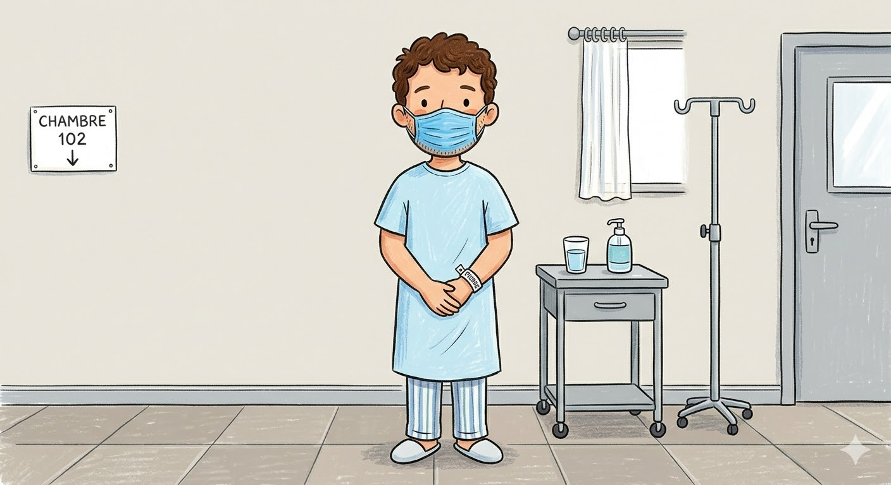

Brouillon
Vous êtes le médecin en charge de poser un diagnostic :

Relancer
Bonjour !
J'ai mal à la tête et j'ai de la fièvre depuis 2 jours.
Avez-vous voyager récemment ?
Faites-vous du sport ?
Quel diagnostic donnez-vous au patient ?